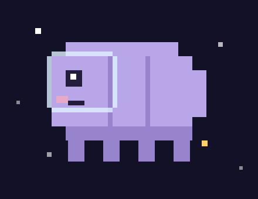
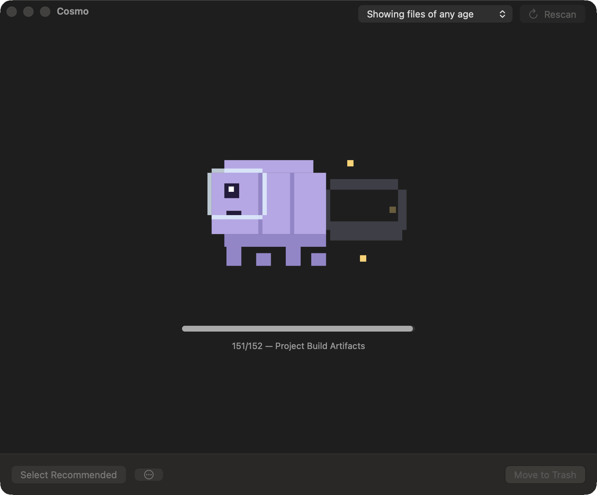

cleanup targets
Xcode DerivedData and device support, simulator runtimes, npm/pnpm/bun, Docker, Gradle, JetBrains — and your projects' node_modules, venvs, and Rust target dirs.

Reclaim the space your dev tools left behind.
The free, open source Mac cleaner for developers — starring a space tardigrade who has survived worse than your full disk.
macOS 26+ · free & open source · no telemetry, no subscription, no upsell
Signed and notarized by Apple — download, unzip, open.

Xcode DerivedData and device support, simulator runtimes, npm/pnpm/bun, Docker, Gradle, JetBrains — and your projects' node_modules, venvs, and Rust target dirs.
Including the ones other cleaners miss: Claude Code, Cursor, Codex sessions, Ollama and LM Studio models, Hugging Face caches, Playwright browsers.
A native SwiftUI app with a clickable storage map, and a scriptable CLI: cosmo scan --json, cosmo clean --all-safe.
Everything goes to the Trash by default — restorable until you empty it. Permanent deletion is opt-in, and destructive items are never pre-selected.
Every target says what it is and what happens after removal. Filter to things untouched for 30/60/90 days. Pick individual items, whole targets, or categories.
The cleaner refuses paths outside your home, skips apps that are still running, and only flags project artifacts proven by their manifest — a folder named target without a Cargo.toml is left alone.